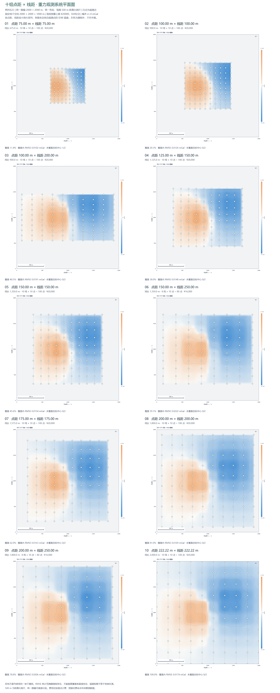

展开十幅统一比例尺平面重力图

十组测线布置与后续解译建议
本次按用户确认的含义制作：10 组不同点距、线距，所有图使用统一比例尺，而不是 10 种不同地图比例尺。长图为两列五行，按点距、线距由小到大排列，每图均标注观测点、东/北坐标、500 m 距离比例尺和统一的重力色标。
十组是十种备选方案，每组选用时均不超过 20000 元；不是要求把十组全部实施。费用仅按测点 200 元计算。
1. 本次模拟对象与图的含义
地下空间固定 2000×2000×1000 m，地面为平面，背景密度 2670 kg/m³。正演只计算相对背景的密度差。
- 高密度球：中心东坐标 800 m、北坐标 1000 m、中心深度 300 m、半径 130 m、密度差 +600 kg/m³。
- 低密度球：中心东坐标 1400 m、北坐标 1250 m、中心深度 520 m、半径 200 m、密度差 −450 kg/m³。
- 所有测网以 (1000,1000) m 为中心，测线均为南北向。此设置是为了统一比较，不代表南北向在任何地质条件下都最优。
- 图面展示各组实际测点的无噪声合成重力异常，经 IDW 距离四次方反比插值所得；并非给每组直接套同一张连续真值图。灰色为测网之外，未作外推。
- 所有坐标范围为 0～2000 m，所有色标范围相同。500 m 为距离比例尺；若打印成不同物理尺寸，不能脱离打印尺寸另称固定的 1∶n 数值比例尺。
2. 十组方案
每线点数 = floor(线长/点距)+1；总点数 = 每线点数×测线条数。覆盖率为测网矩形面积/4 km²，不代表探测成功率。
| 编号 | 点距 m | 线距 m | 线长 m | 测线×每线点数 | 点数 | 费用 元 | 覆盖率 | 覆盖内 RMSE mGal |
|---|
| 01 | 75 | 75 | 675 | 10×10 | 100 | 20000 | 11.4% | 0.0102 |
| 02 | 100 | 100 | 900 | 10×10 | 100 | 20000 | 20.3% | 0.0126 |
| 03 | 100 | 200 | 900 | 10×10 | 100 | 20000 | 40.5% | 0.0191 |
| 04 | 125 | 150 | 1125 | 10×10 | 100 | 20000 | 38.0% | 0.0148 |
| 05 | 150 | 150 | 1350 | 10×10 | 100 | 20000 | 45.6% | 0.0154 |
| 06 | 150 | 250 | 1350 | 8×10 | 80 | 16000 | 59.1% | 0.0222 |
| 07 | 175 | 175 | 1575 | 10×10 | 100 | 20000 | 62.0% | 0.0163 |
| 08 | 200 | 200 | 1800 | 10×10 | 100 | 20000 | 81.0% | 0.0169 |
| 09 | 200 | 250 | 1800 | 8×10 | 80 | 16000 | 78.8% | 0.0206 |
| 10 | 222.22 | 222.22 | 2000 | 10×10 | 100 | 20000 | 100% | 0.0174 |
图上使用未舍入的 2000/9 m 布置第 10 组，保证端点严格落在测区边界。第 06、09 组各余 4000 元，尚未实际安排或计入复测数据。
3. 地表应该怎样布置
情况一：异常位置未知，要先找异常
十组中，优先把第 10 组作为全区普查布局；第 08 组可用于主要关注内部目标、允许边缘留白的情况。第 10 组 10 条线、每条 10 点，点距和线距均为 222.22 m，刚好覆盖整个 2 km×2 km。
理由是先保证空间覆盖，才有机会发现分散的异常，并识别异常之间的背景变化。不能因为局部密网的插值图好看，就默认测网以外没有目标。不过此布局主要用于发现和圈定异常，不能保证浅小目标的细节解译。
情况二：已知两个目标的大致位置，要做进一步解译
在本次模型下，建议以第 04、05 组作为目标区精测的起点，结合浅部异常梯度区调整位置：
- 第 04 组：点距 125 m、线距 150 m、线长 1125 m，10 条线×10 点，共 100 点。适合偏重浅部异常的沿线细节。
- 第 05 组：点距、线距均 150 m，线长 1350 m，10 条线×10 点，共 100 点。比第 04 组具有更长的南北覆盖，可观察更宽的异常背景。
两者都覆盖当前两个异常体中心的地表投影，但都没有覆盖全区。它们也没有保证完整取得深部异常两侧的全部衰减段；对区域场和深度的约束仍有限。实际布网应把异常中心、两侧梯度与外围背景一起纳入，并视目标位置移动测网，不能机械固定在 (1000,1000) m。
情况三：希望兼顾找异常、局部解译和质量检查
可以采用两阶段采样，而不是一次把 100 点全部铺成均匀网：先用 6×6、点距和线距均 400 m 的全区网取得 36 个点，识别主要异常方向；再把 56 个新点分配到异常梯度大或两个异常重叠的区域，最后留出相当于 8 次测量的经费作复测和基点检查。若每次复测也按 200 元计费，预算为 (36+56+8)×200=20000 元。
这是一种预算分配建议，未作为额外方案混入十幅规则网图，也未经本次十组比较验证为最优。400 m 初测本身可能漏掉浅小异常；有可靠地质线索时，应先在重点区域加线。具体加密位置需要用第一阶段数据决定，并避免把已经测过的位置重复算成新点。交通、定位和高程测量若也要从 2 万元支付，应先扣除，测点数将相应减少。
4. 详细理由
4.1 为什么不能全区都铺得很密
100 个点铺成覆盖全区的近方形规则网，大致为 10×10，间隔 2000/9≈222.22 m。若全区都要求 100 m 点距和线距，则需 21×21=441 点，费用为 88200 元；150 m 网格若坚持最大间隔不超过 150 m 且覆盖两端，则每边需 15 点，共 225 点，费用为 45000 元。
预算下必须取舍。密网用来刻画目标区，疏网用来保留背景和覆盖；不存在同时满足全区、高密度和 100 点的规则方网。
4.2 为什么应优先照顾较浅目标
球体外部垂向异常为 g(r)=GMh/(r²+h²)^(3/2)。较浅目标的空间变化通常更快。单个孤立球体的半高全宽约为 1.53h，因此 h=300 m 与 h=520 m 时分别约为 460 m 与 796 m。此估算来自球体解析式，不是所有几何体的普遍公式，也不是当前双体叠加场的精确宽度。
按课堂照片的 Δx≈h/3～h/2，浅目标对应约 100～150 m；深目标对应约 173～260 m。在不知道目标会落在两个测点之间何处时，100～150 m 点距能给浅目标的峰部和两侧变化提供更多样本。按浅目标布网通常也能满足深部宽异常的采样需求，但不意味着其深度能被唯一确定。
4.3 为什么点距密了，线距也不能太疏
平面解译需要两个水平方向都具有约束。第 02 与 03 组点距同为 100 m，把线距从 100 m 放大到 200 m 后，覆盖面积扩大，但线间的变化由插值补足。当前正异常体中心处，真值约为 +0.3187 mGal，第 02 组恢复约 +0.2711，第 03 组约 +0.2169 mGal。
这说明沿线点密不能补偿横向线间信息不足。若目标是三维空间中的孤立异常体，点距与线距相近通常是合理起点；若目标已知为长条状，才可依走向设计不同方向的采样间隔。
4.4 为什么要测到异常外围
第 01 组虽为最密的 75 m 网格，却只覆盖 11.4% 的全区，低密度体中心 (1400,1250) m 落在网外。第 02 组覆盖两个中心，但低密度体的投影距离东边界仅 50 m，异常外围受限。
只测峰部容易把宽异常截断，难以判断区域背景、异常宽度及其与邻近目标的叠加。应尽可能测到异常两侧的衰减段，并保留外围背景点，才能更稳妥地分离区域场与局部异常。在信号未回归背景时，不应把地图边界当作地质边界。
4.5 为什么不能用“误差最小”直接选最优
这里 RMSE 只在各测网覆盖范围内统计。第 01 组 RMSE 约 0.0102 mGal，低于第 10 组的 0.0174 mGal，但它漏掉第二个目标中心。因此二者的误差不属于同一评估范围，不能据此说第 01 组更适合全区勘探。
还要比较目标是否覆盖、峰值是否被削弱、异常两侧是否有数据和背景是否充分。例如第 10 组虽然覆盖全区，当前浅部异常体中心的恢复值仅约 +0.1716 mGal，较该点真值低约 46%；第 04 组约为 +0.2790 mGal，低约 12%。这些数值只针对本次模型、测网相位和 IDW 方法，不能推广成固定间距的通用误差。
4.6 测线方向为什么要结合地质条件
若有已知长条矿体、断裂或岩层走向，主测线通常应尽量横穿预期异常带，以取得两侧变化，并以少量交叉线检查沿走向变化。若目标形态与位置未知，较均衡的二维测网更稳妥。
本例使用球体，没有单体长轴走向，因此十幅图固定南北向仅为控制变量，不能证明南北向最优。双异常叠加后仍有空间方向性，可再旋转测网，检查不同方向的采样对两异常分离的影响。
4.7 数据如何用于后续解译
现场应把基点联系、复测、时间与高程记录纳入流程，处理仪器漂移和潮汐，并根据目标进行纬度、高度、布格及地形等改正，然后再做区域场分离与异常解释。高密度布点不能补偿系统性观测误差。
解译时先查看原始测点剖面，再看不同插值方法和网格尺度下的平面图。插值网格很细只代表显示细，并不增加独立观测信息。梯度、向下延拓等操作可能放大采样误差与噪声，应结合数据间距及稳定性检验使用。
最后用地质边界、岩石密度或钻孔资料约束正反演。重力响应受密度差、体积、形状和埋深共同影响；不同地下模型可以产生相近地表场，单靠一张平面图不能唯一恢复地下密度。
5. 来源与验证
上表、中心信号、覆盖率和误差均由本地正演/采样代码计算，结果保存于 work/survey-design/十组测线-计算结果.json。十幅图使用同一模型、同一噪声强度（本次为零）、同一 IDW 方法。
课堂经验式取自用户提供的照片。线长 L≈3～5h 为截断照片的暂定解释，页面已说明。以上推荐是对当前示例的有条件判断，没有声称完成现场反演或证明某一布局在所有条件下最优。